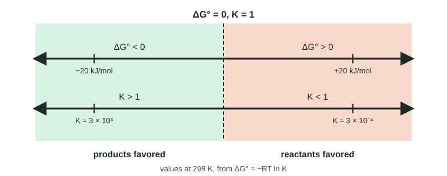

Free Energy and Equilibrium
The standard free energy change and the equilibrium constant are linked by ΔG° = −RT ln K.
Part 1 · Hook
Why this matters
Part 2 · Before you start
What this builds on
Part 3 · Prerequisite check
Quick check before you start
1. What does K > 1 tell you about an equilibrium?
- Products are favored at equilibrium
- Reactants are favored at equilibrium
- The reaction is fast
- The reaction has stopped
Show the answer
A large K means the equilibrium mixture is mostly products.
- Correct: Products are favored at equilibrium:
- Reactants are favored at equilibrium:
- The reaction is fast:
- The reaction has stopped:
2. What is ln(1)?
- 0
- 1
- 2.303
- e
Show the answer
e⁰ = 1, so ln 1 = 0.
- Correct: 0:
- 1:
- 2.303:
- e:
3. Which value of R is used with energy in joules?
- 8.314 J/(mol·K)
- 0.08206 L·atm/(mol·K)
- 96,485 C/mol
- 6.022 × 10²³ /mol
Show the answer
The energy form of the gas constant is 8.314 J/(mol·K).
- Correct: 8.314 J/(mol·K):
- 0.08206 L·atm/(mol·K):
- 96,485 C/mol:
- 6.022 × 10²³ /mol:
Part 4 · See it
See it first

Part 5 · Step by step
How it works, step by step
- ΔG° compares products and reactants under standard conditionsit measures how far the reaction goes before reaching equilibrium
- The two are linked by ΔG° = −RT ln Ka negative ΔG° gives ln K > 0 and K > 1
- The relation is exponentiala change of a few kJ/mol in ΔG° changes K by a large factor
- At equilibrium Q = K and there is no net driveΔG = 0, while ΔG° keeps its fixed value
Part 6 · Key ideas
Key ideas
- ΔG° = −RT ln K, with R = 8.314 J/(mol·K), T in kelvin, and ΔG° in J/mol.
- ΔG° < 0 ⇔ K > 1 (products favored). ΔG° > 0 ⇔ K < 1 (reactants favored). ΔG° = 0 ⇔ K = 1.
- To find K: K = e^(−ΔG°/RT). Use ln and e, not log and 10.
- ΔG° near zero means K near 1: both reactants and products are present in large amounts.
- Reverse a reaction: ΔG° changes sign and K inverts. Double it: ΔG° doubles and K is squared.
Part 7 · Misconception
A common mistake
The wrong idea: A reaction with a positive ΔG° makes no product at all.
What actually happens: A positive ΔG° means K < 1, not K = 0. Starting from pure reactants, Q < K, so some product forms until Q = K; reactants are simply favored at equilibrium.
Part 8 · Check yourself
Check yourself
Exam-style questions. Anything you miss goes into your review queue.
Data table
Five reactions at 298 K
Standard free energy changes for five reactions, A to E, all at 298 K. R = 8.314 J/(mol·K).
| Reaction | ΔG° (kJ/mol) |
|---|---|
| A | −20.0 |
| B | −5.0 |
| C | 0.0 |
| D | +5.0 |
| E | +20.0 |
1. For which reaction is K closest to 1?
- A
- C
- E
- B
Show the answer
ΔG° = −RT ln K. When ΔG° = 0, ln K = 0 and K = 1.
- A: ΔG° = −20.0 kJ/mol gives K of about 3 × 10³, far above 1.
- Correct: C: Right: ΔG° = 0 gives ln K = 0, so K = 1.
- E: ΔG° = +20.0 kJ/mol gives K of about 3 × 10⁻⁴, far below 1.
- B: ΔG° = −5.0 kJ/mol gives K of about 7.5: close-ish, but not as close as reaction C.
2. Calculate K for reaction A at 298 K.
Type a number.
Show the answer
ln K = −ΔG°/RT = −(−20,000 J/mol)/[(8.314 J/(mol·K))(298 K)] = 8.072. K = e^8.072 = 3.2 × 10³ (two significant figures). K > 1, as expected for ΔG° < 0.
- Answer: 3.2e+3
3. At equilibrium, which reaction has mostly reactants and very little product?
- A
- C
- D
- E
Show the answer
The more positive ΔG°, the smaller K, and the more the equilibrium mixture is reactants.
- A: ΔG° < 0 gives K > 1: products are favored.
- C: K = 1: neither side is strongly favored, so both are present in large amounts.
- D: K ≈ 0.13: reactants are favored, but much less strongly than in reaction E.
- Correct: E: Right: ΔG° = +20.0 kJ/mol gives K ≈ 3 × 10⁻⁴, so reactants are favored.
4. A student says reaction D, with ΔG° = +5.0 kJ/mol, "cannot happen at all." Which reply is best?
- K ≈ 0.13, so from pure reactants some product forms until Q = K.
- The student is right, because a reaction with ΔG° > 0 makes no product.
- The reaction goes to completion, because ΔG° is so close to zero.
- The reaction happens once a catalyst is added, which makes ΔG° negative.
Show the answer
ΔG° refers to standard conditions. A positive value means K < 1: reactants are favored at equilibrium, but some product is still present.
- Correct: K ≈ 0.13, so from pure reactants some product forms until Q = K.: Right: a positive ΔG° means K < 1, not K = 0. An equilibrium mixture still contains product.
- The student is right, because a reaction with ΔG° > 0 makes no product.: ΔG° > 0 means K < 1. Starting from reactants, Q = 0 < K, so the net reaction goes forward a little.
- The reaction goes to completion, because ΔG° is so close to zero.: Close to zero means K is close to 1, not that the reaction goes to completion.
- The reaction happens once a catalyst is added, which makes ΔG° negative.: A catalyst does not change ΔG° or K.
5. For N₂(g) + 3 H₂(g) ⇌ 2 NH₃(g), ΔG° = −33.2 kJ/mol at 298 K. Calculate K. (R = 8.314 J/(mol·K))
Type a number.
Show the answer
ln K = −ΔG°/RT = 33,200 J/mol ÷ [(8.314 J/(mol·K))(298 K)] = 13.40. K = e^13.40 = 6.6 × 10⁵ (two significant figures). The large K matches the strongly negative ΔG°.
- Answer: 6.6 × 105
6. If ΔG° for a reaction is large and negative, what is true of K?
- K is much greater than 1, so products are favored at equilibrium.
- K is much less than 1, so reactants are favored at equilibrium.
- K is equal to 1, so equal amounts of reactants and products are present.
- K is negative, because ΔG° is negative.
Show the answer
K = e^(−ΔG°/RT). A large negative ΔG° gives a large positive exponent and K ≫ 1.
- Correct: K is much greater than 1, so products are favored at equilibrium.: Right: ln K = −ΔG°/RT is large and positive.
- K is much less than 1, so reactants are favored at equilibrium.: That is the case for a large positive ΔG°.
- K is equal to 1, so equal amounts of reactants and products are present.: K = 1 goes with ΔG° = 0.
- K is negative, because ΔG° is negative.: K is an exponential, e^(−ΔG°/RT), so it is positive whatever the sign of ΔG°.
7. A reaction mixture is at equilibrium. Which statement is correct?
- ΔG° is zero, because nothing in the mixture is changing.
- ΔG for the system is zero, while ΔG° keeps its fixed value set by K.
- ΔG is negative, because the forward reaction is still running.
- K equals zero, because the reaction has stopped.
Show the answer
ΔG measures the drive under the actual conditions; it is zero at equilibrium. ΔG° refers to standard conditions and is fixed for a given T.
- ΔG° is zero, because nothing in the mixture is changing.: ΔG° is the standard value and equals −RT ln K; it is zero only when K = 1.
- Correct: ΔG for the system is zero, while ΔG° keeps its fixed value set by K.: Right: at equilibrium Q = K and ΔG = 0; ΔG° = −RT ln K does not change.
- ΔG is negative, because the forward reaction is still running.: Forward and reverse rates are equal, so there is no net drive in either direction: ΔG = 0.
- K equals zero, because the reaction has stopped.: The reaction has not stopped (it is dynamic), and K is a fixed positive number.
Part 9 · Summary
Summary
Part 10 · Up next
What comes next
Part 11 · Connections